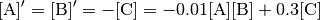

1. Brief Tour of E-Cell4 Simulations¶
First of all, you have to load the E-Cell4 library:
%matplotlib inline
from ecell4 import *
1.1. Quick Demo¶
There are three fundamental components consisting of E-Cell System
version 4, which are Model, World, and Simulator. These
components describe concepts in simulation.
Modeldescribes a problem to simulate as its name suggests.Worlddescribes a state, e.g. an initial state and a state at a time-point.Simulatordescribes a solver.
Model is independent from solvers. Every solver can share a single
Model instance. Each alogrithm has a corresponding pair of World
and Simulator (these pairs are capsulized into Factory class).
World is not necessarily needed to be bound to Model and
Simulator, but Simulator needs both Model and World.
Before running a simulation, you have to make a Model. E-Cell4
supports multiple ways to buld a Model (See 2. How to Build a
Model). Here, we explain
the simplest way using the with statement with reaction_rules:
with reaction_rules():
A + B > C | 0.01 # equivalent to create_binding_reaction_rule
C > A + B | 0.3 # equivalent to create_unbinding_reaction_rule
m1 = get_model()
print(m1)
<ecell4.core.NetworkModel object at 0x103b52918>
Please remember to write parentheses () after reaction_rules.
Here, a Model with two ReactionRules named m1 was built.
Lines in the with block describe ReactionRules, a binding and
unbinding reaction respectively. A kinetic rate for the mass action
reaction is defined after a separator |, i.e. 0.01 or 0.3.
In the form of ordinary differential equations, this model can be
described as:

For more compact description, A + B == C | (0.01, 0.3) is also
acceptable.
E-Cell4 has a simple interface to run simulations with the given model,
run_simulation. This enables for you to run simulations without
instanciate World and Simulator by yourself. To solve this
model, you have to give a volume, an initial value for each Species
and duration of time:
run_simulation(10.0, model=m1, y0={'A': 60, 'B': 60}, volume=1.0)
To switch simulation algorithm, you only need to give the type of solver
(ode is used as a default) as follows:
run_simulation(10.0, model=m1, y0={'A': 60, 'B': 60}, solver='gillespie')
1.2. Spatial Simulation and Visualization¶
E-Cell4 now supports multiple spatial algorithms, egfrd,
spatiocyte and meso. In addition to the model used in
non-spatial solvers (ode and gillespie), these spatial solvers
need extra information about each Species, i.e. a diffusion
coefficient and radius.
The with statement with species_attributes is available to
describe these properties:
with species_attributes():
A | B | C | {'radius': '0.005', 'D': '1'} # 'D' is for the diffusion coefficient
with reaction_rules():
A + B == C | (0.01, 0.3)
m2 = get_model()
Even though the properties indicate a floating number, each attribute must be given as a string.
Now you can run a spatial simulation in the same way as above (egfrd
would need long time to simulate):
run_simulation(10.0, model=m2, y0={'A': 60, 'B': 60}, solver='meso')
Structure (e.g. membrane, cytoplasm and nucleus) is only supported by
spatiocyte and meso now. For the simulation, location that
each species belongs to must be specified in its attribute first.
with species_attributes():
A | {'D': '1', 'location': 'S'} # 'S' is a name of the structure
m3 = get_model() # with no reactions
E-Cell4 supports primitive shapes as a structure like Sphere:
sphere = Sphere(Real3(0.5, 0.5, 0.5), 0.48) # a center position and radius
E-Cell4 provides various kinds of Observers, which log the state
during a simulation. Two observers are declared to log positions of
molecules. FixedIntervalTrajectoryObserver logs a trajectory of a
molecule, and FixedIntervalHDF5Observer saves World to a HDF5
file at the given interval:
obs1 = FixedIntervalTrajectoryObserver(1e-3)
obs2 = FixedIntervalHDF5Observer(0.1, 'test%02d.h5')
Then, run_simulation accepts structures and observers as arguments
structure and observers respectively (see also
help(run_simulation)):
run_simulation(1.0, model=m3, y0={'A': 60}, structures={'S': sphere},
solver='spatiocyte', observers=(obs1, obs2), return_type=None)
E-Cell4 also provides visualizations including an interactive
visualization on Jupyter Notebook like viz.plot_world.
viz.plot_world plots positions of molecules in 3D. In addition, by
using load_world, you can easily restore the state of World from
a HDF5 file:
# viz.plot_world(load_world('test00.h5'), species_list=['A'])
viz.plot_world(load_world('test00.h5'), species_list=['A'], interactive=False)
Also for FixedIntervalTrajectoryObserver, viz.plot_trajectory
plots trajectories in the interactive way:
# viz.plot_trajectory(obs1)
viz.plot_trajectory(obs1, interactive=False)
For more details, see 5. How to Log and Visualize Simulations